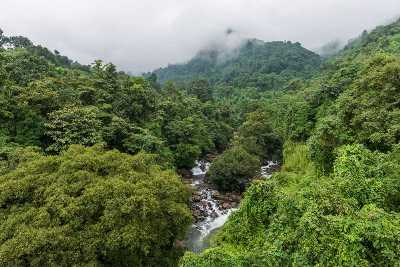

kozhikode
The legendary seaport where Arab, Chinese and East African traders once converged, Kozhikode was previously the most crucial region of the Malabar Coast. Vasco da Gama landed on its shores in 1498, shooting the region to global fame. Once the capital of the influential Zamorins and a prominent trade and commerce centre, the winds of change have swept over this charming coastal land. The whiff of history continues to permeate the lanes, bazaars and business hubs of Kozhikode. Lush green countryside, serene beaches, historic sites, wildlife sanctuaries, rivers and hills make Kozhikode a popular destination.
Tourist Attractions

Thusharagiri Waterfalls
Lying in the Western Ghats of Kozhikode district in Kerala, Thusharagiri Fall cascades down as three waterfalls. Located in a small tribal village, the name of the falls means ???snow covered mountains'.
Kozhippara Waterfalls
Easily accessible by roads, Kozhippara Falls are situated on the borders of Kakkadampoyil on the Malappuram -Calicut District divide in Malappuram district. Providing a stunning sight, these falls are best known for its swimming, bird watching and jungle trekking. Also known as Kakkadampoyil Waterfall, the Kozhippara waterfall is located on Kuthradampuzha river area.